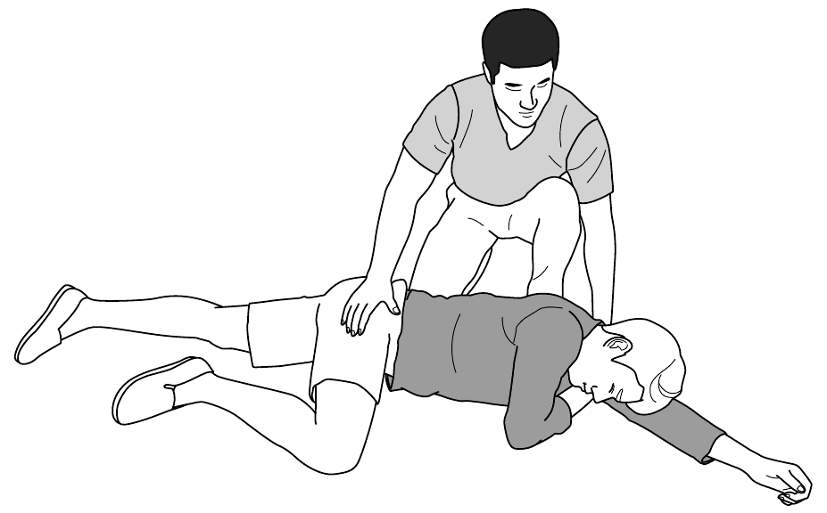
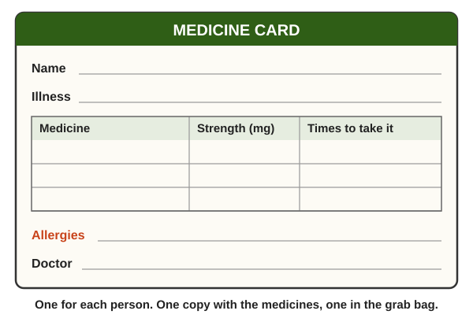
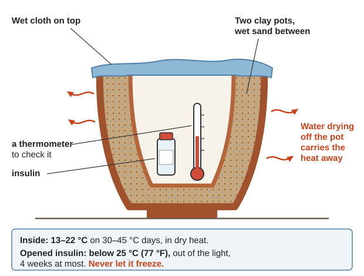
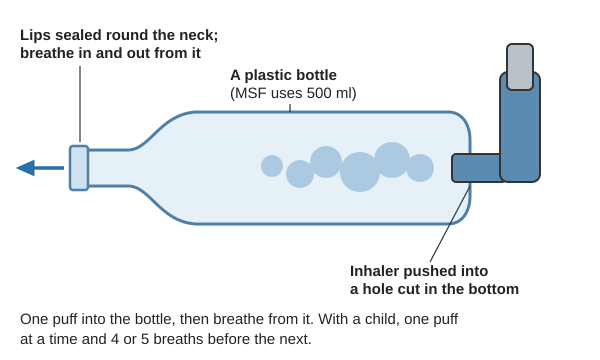

Guides › Health & medicine · Emergency · Index A–Z
For anyone who lives on a daily medicine or device (insulin, heart pills, inhalers, seizure or thyroid medicine, psychiatric medicines, oxygen, dialysis, glasses, hearing aids, dentures) when no pharmacy or doctor is coming for months or years: stocking up now, what happens as each medicine runs out, the usual doses the books give, what food and care can still do, the medicines that are dangerous to stop, and what to do when someone can no longer be kept well. The books are in Medical\Medicines (WHO Model Formulary and the one for children, MSF Essential Drugs, WHO essential medicines lists), Medical\Manuals-PDF (MSF Clinical Guidelines, Ship's Medicine Chest, Emergency War Surgery, Where There Is No Dentist), Medical\Where There Is No Doctor (WTND, whose green pages give uses and doses), Medical\Where Women Have No Doctor (WWHND), Medical\Field-Care (Hospital Corpsman, WHO-ICRC Basic Emergency Care), Medical\Rehab-Physical-Therapy (CDC STEADI) and Southern-Oregon\Community-Barter\Wellbeing. Found and expired medicines: Medical books & found medicines.
The short version
- Now, while you can: ask your doctor and pharmacist for a bigger supply (aim for 90 days or more (rule of thumb)), a written list, and a written plan for what to do if it runs out. "Keep an emergency supply of important medicines on hand at all times" (WTND, p. 332).
- Never stop these suddenly: steroid pills, beta-blockers, seizure medicines, benzodiazepines and some psychiatric medicines; heavy daily drinkers must not stop alcohol alone. Step them down the way the table below shows.
- Opened insulin keeps at most 4 weeks below 25 °C (77 °F), out of the light. Never freeze it (MSF, p. 426).
- Diabetic, acting drunk or confused, can't tell if sugar is high or low? Give sugar. "Brain damage develops very quickly" when it is low (Hospital Corpsman, p. 207).
- Seizure: put nothing in the mouth. Move hard things away, time it; over 5 minutes is an emergency (MSF, p. 22).
- Food and habits still work: less salt for blood pressure and heart failure, diet and hard work for type 2 diabetes, clean air for asthma.
- Keep spare glasses, hearing-aid batteries and a clean denture: they are work, talk and food.
- Some people cannot be kept well without what is gone. Talk with them early and honestly, and keep them comfortable.
⚠️ Before you give any dose
- The doses here are the usual doses printed in the library's medical books, for when no doctor or pharmacist can be reached. They are not a prescription. Where two books differ, both are shown.
- Be sure what the pill is first: the label, or the Pill Identifier under Tools (on a drive:
Medical\Pill-Identifier\PILL-IDENTIFIER.html). Read the strength in mg on the label: the same medicine comes in different strengths (WTND, p. 60).- Start low and watch closely. Doses are lower for the old, the small, and anyone with kidney or liver disease (WHO Formulary, pp. 16, 622). Children's doses go by weight (the WHO Model Formulary for Children, in
Medical\Medicines). When a book gives only the adult dose, WTND gives a child ½ of it at 8–13 years, ¼ at 4–7 years, ⅛ at 1–3 years (WTND, p. 62).- Check what the person must not take (the last column of each table), pregnancy, and their other medicines: the WHO formulary lists interactions in Appendix 1 (p. 513).
- Write down every dose given, the time, and what happened.
- If anyone with training can be reached, by radio or in person, ask them.
Anyone on insulin or sugar pills, or a starving or very sick person, can go low fast. Signs: hunger, tiredness, shaking, fast heartbeat, pale, sweating, anxious, blurred vision, trouble speaking, confusion, convulsions, then coma. For someone with diabetes, low is under "3.9 mmol/litre (< 70 mg/dl)" on a meter (MSF, p. 32). It is often mistaken for drunkenness (Hospital Corpsman, p. 207).
| Situation | What the books give |
|---|---|
| Awake, can swallow: adult | "15 to 20 g of sugar (3 or 4 cubes) or sugar water, fruit juice, soda, etc." (MSF, p. 32). WHO: "glucose, 10–20 g", or "granulated sugar (2 teaspoons) or sugar lumps (3 lumps)", "repeated after 10–15 minutes" if needed (WHO Formulary, p. 390) |
| Awake, can swallow: child | "a teaspoon of powdered sugar in a few ml of water or 50 ml of fruit juice" (MSF, p. 32) |
| Can't swallow or unconscious | Nothing to drink. Inside the cheek: "2–5 ml of 50% dextrose", or "1 level teaspoon of sugar moistened with water every 10–20 minutes" (WHO-ICRC, p. 204); MSF puts granulated sugar under the tongue (p. 185). Lay them on their side |
During it (MSF, p. 22; WTND, p. 178):

On the side once the jerking stops: top leg bent forward, head on the straight lower arm so the mouth drains (WHO-ICRC, p. 190).Over 5 minutes, or a second seizure before they wake, is an emergency ("status epilepticus"): the longer it lasts, the harder it is to stop and the greater the risk of brain damage and death (MSF, p. 22). The rescue medicine is diazepam into the back passage: draw up the injection liquid in a syringe with the needle taken off, or grind a tablet into water, and squirt it into the rectum (WTND, p. 391); lay them on their side and hold the buttocks together a minute (MSF, p. 24).
| Diazepam in the rectum | Dose the books give | Repeat |
|---|---|---|
| WTND (p. 391) | "adults and children over 12 years: 5 to 10 mg"; "children 6 to 12 years: 3 to 5 mg"; "children under 6 years: 1 to 3 mg" | Once, if not controlled after 15 minutes. "Do not repeat more than once" |
| MSF (pp. 23–25) | 12 years and over (40 kg and over): "2 to 4 ml" of the 5 mg/ml solution; 65 and over, "do not exceed 2 ml (= 10 mg) per dose". Children by weight in its Table 1 | Once more if still seizing after 5 minutes; "do not administer more than 2 doses" |
| WHO (p. 83) | "ADULT and CHILD over 10 kg, 500 micrograms/kg; ELDERLY, 250 micrograms/kg" |
Watch for: "Too much diazepam can slow down or stop breathing" (WTND, p. 391).
Wheezing, the skin between the ribs sucking in, lips or nails turning blue (WTND, p. 167):
A crushing pain that does not go away with rest is probably a heart attack; in women it may feel like indigestion, nausea, clammy skin or jaw pain. Rest very quietly in a cool place; stay in bed while there is pain or shock, then move slowly and stay quiet for a month or more (WTND, p. 325). Severe chest pain or trouble breathing can also be panic: help them stay calm, but treat it as an emergency (WWHND, p. 420).
| Medicine | Dose the books give | Don't use if |
|---|---|---|
| Aspirin, chewed, for a suspected heart attack | WHO: "150–300 mg by mouth (preferably chewed or dispersed in water) is given immediately" (p. 299). Emergency War Surgery: "Aspirin 81 mg PO, chewed as quickly as possible and daily thereafter" (p. 168) | Allergic to aspirin (including asthma from it), under 16, active stomach ulcer, bleeding disorder (WHO, p. 301) |
| Nitroglycerin (glyceryl trinitrate) under the tongue, for angina | MSF: "0.5 to 1 mg sublingually, to be repeated 1 to 3 times at 3-4 minute intervals"; "Do not exceed 3 mg daily" (MSF Essential Drugs, p. 157). WHO: "0.5–1 mg, repeated as required" (p. 276) | Low blood pressure or shock; anyone who took sildenafil or another erection drug (MSF, p. 158) |
Pain that nitroglycerin does not ease is more likely a heart attack than angina (Hospital Corpsman, p. 208).
While there is still someone to ask, ask. Take these questions to the next visit (rule of thumb):

A card to copy for each person: one with the medicines, one in the grab bag (a form drawn for this guide).| Tool | For |
|---|---|
| Blood pressure cuff with a gauge, and a stethoscope (no batteries) | How to use it: WTND, pp. 412–413 |
| Sugar meter and strips, or urine sugar strips | Urine strips are less exact but easier and cheaper; test daily (WHO Formulary, p. 390) |
| Bathroom scale | A weight chart for heart failure (MSF, p. 401) |
| Insulin syringes that match the insulin | "only syringes calibrated for the particular concentration" (WHO Formulary, p. 388) |
| Iodized salt; a spacer for inhalers | Thyroid and Asthma, below |
| A thermometer in the medicine store | Insulin must stay below 25 °C and never freeze (MSF, p. 426) |
Don't just stop when the bottle is empty. The books step these down gradually. Where a book gives the pace, it is here; where none does, the table says so.
| Medicine | Stopped suddenly | How the books step it down |
|---|---|---|
| Steroid tablets (prednisone, prednisolone, hydrocortisone, dexamethasone) | "acute adrenal insufficiency, hypotension or even death" after long use (WHO, p. 365). Illness or injury needs a temporary higher dose (p. 366) | "reduced rapidly down to the physiological dosage (equivalent to 7.5 mg prednisolone daily) and then reduced more slowly". A sudden stop only after 3 weeks or less, and not after more than 40 mg a day, evening doses or repeated courses (WHO, p. 368). No book gives the slow part in numbers |
| Beta-blockers ("-olol": atenolol, metoprolol, bisoprolol, propranolol) | Angina attacks; heart failure gets suddenly worse (WHO, p. 274; MSF, p. 400) | "withdrawn gradually" (WHO); "reduce the dose ... or gradually stop" (MSF). No book gives a schedule |
| Clonidine (a blood pressure pill) | Blood pressure can shoot back up (rule of thumb; not in the library's books) | No book gives one |
| Seizure medicines | "Immediate stopping can cause more and severe seizures" (WTND, p. 390), even status epilepticus (WHO, p. 78) | MSF: "slowly tapered (e.g. by 10% every 2 weeks) over a period of at least 3 months" (p. 385). WHO: over "several months", one medicine at a time (p. 78) |
| Benzodiazepines (diazepam/Valium, alprazolam/Xanax, clonazepam/Klonopin, lorazepam) taken for weeks | "confusion, toxic psychosis, convulsions, or a condition resembling delirium tremens", up to 3 weeks after a long-acting one (WHO, p. 478) | "gradual reduction of the dose over a period of weeks or months" (same page). No book gives a schedule |
| Barbiturates (phenobarbital and others) | "Barbiturate withdrawal is LIFE THREATENING!" (Hospital Corpsman, p. 231) | "tapering the dose slowly over several days" (same page) |
| Antidepressants | Dizziness, nausea, anxiety, headaches, tingling, poor sleep (WHO, p. 473); stopped too soon, "symptoms are likely to recur" (p. 471) | "stopped gradually over a 4-week period" (MSF, p. 368) |
| Lithium | "avoid abrupt withdrawal" (WHO, p. 476) | "reduced gradually over about 4 weeks", "6 months in patients who have been on long-term maintenance treatment" (WHO, p. 471) |
| Antipsychotics | Withdrawal effects and relapse, which "may be delayed for several weeks" (WHO, p. 465) | After a first episode, stable 3 months: "stop the treatment gradually over 4 weeks, monitoring for potential relapse" (MSF, p. 371) |
| Opioids (morphine, oxycodone, hydrocodone, methadone) | Days of misery, worst at about 72 hours, "rarely life-threatening" (Ship's, p. 113; Hospital Corpsman, p. 228) | "tapering the dose over several days" (Hospital Corpsman, p. 228). No book gives numbers |
| Alcohol (heavy daily drinkers) | Shakes, sweats, seizures; DTs 24–72 hours after the last drink. "Untreated, DT's have a 20% fatality rate" (Ship's, pp. 108, 110) | With diazepam, below |
Alcohol withdrawal (shaking, sweating, irritable, unwell). The books' plan:
Signs of diabetes: always thirsty, passing a lot of urine, hungry, tired, losing weight, blurred sight, numb feet, sores that won't heal (WTND, p. 127). Type 1 usually starts young; the body makes no insulin, and "Patients require administration of insulin" for life. Type 2 usually starts after 40 and "may be controlled by diet alone" (WHO Formulary, p. 388; WTND, p. 127).
Keeping it (MSF, pp. 425–426; p. 429):
| Insulin | Keep it |
|---|---|
| Unopened | In a fridge, 2–8 °C (36–46 °F) |
| Opened (in use) | 4 weeks at most, below 25 °C (77 °F), out of the light |
| Any | Never frozen. Let it reach room temperature before use |

A clay-pot cooler with insulin and a thermometer inside (Practical Action, pp. 1–2; insulin: MSF, p. 426; a diagram drawn for this guide).How much insulin. Be honest about this: insulin is set person by person. WHO's dose is "according to individual requirements" for adults and children alike (WHO Formulary, p. 394). What the books do give:
| What the books give | |
|---|---|
| Kinds | Short-acting (soluble, "regular") is clear and works for "7 to 8 hours"; intermediate-acting is cloudy and lasts "around 24 hours" (MSF Essential Drugs, p. 422). Long-acting analogues (glargine and others) come as a "solution", not a cloudy suspension (WHO EML, p. 54): read the label, not the colour (rule of thumb) |
| How it is split | New, very ill: "soluble insulin given 3 times daily with medium-acting insulin at bedtime"; less ill: premixed "30% soluble insulin and 70% isophane insulin" "given twice daily" (WHO, p. 389). Short-acting goes in "15 to 30 minutes before a meal" (MSF Essential Drugs, p. 428) |
| Daily totals | No book here gives a starting total for type 1. For type 2 adding insulin, MSF starts intermediate-acting at bedtime at "0.2 IU/kg"; "Doses of 1 IU/kg/day or more may be necessary"; over "0.5 IU/kg/day", split it into 2 injections (MSF, p. 392) |
| Adjusting (MSF's table, for bedtime insulin in type 2, by the morning sugar, keeping each dose 4 days) | Under 4 mmol/litre (< 70 mg/dl): treat the low and "Reduce daily dose of insulin by 2 to 4 units". 4 to 7.2 (70–130 mg/dl): "Do not change dose". 7.2 to 11 (130–200 mg/dl): "Increase daily dose of insulin by 2 units". 11 or more (≥ 200 mg/dl): "Increase daily dose of insulin by 4 units" (MSF, p. 392) |
| Sick days | No book gives sick-day numbers. Infection, stress and injury raise the need, kidney failure lowers it (MSF Essential Drugs, p. 423), and ketoacidosis "commonly occurs when adjustments to insulin dosage fail to compensate" in "severe infection" (WHO, p. 391). In type 1, never stop the long-acting (background) insulin, even when not eating; test more often (rule of thumb) |
Watch for: lows (above); pain, redness or lumps of fat where it goes in: "Rotate injection sites systematically" (MSF Essential Drugs, p. 423).
Too little insulin, or a missed dose, lets sugar climb. Then the body burns fat and the blood turns acid: diabetic ketoacidosis (DKA) (Hospital Corpsman, p. 206; Diabetic ketoacidosis).
When the insulin runs out: without insulin, a person with type 1 diabetes goes into ketoacidosis and dies, usually within days to a few weeks (rule of thumb). No diet or herb replaces insulin. This is the hardest case in this guide: see "When someone can no longer be kept well", below.
| Medicine | Usual adult dose (book, page) | Children | Watch for / don't use if |
|---|---|---|---|
| Metformin | WHO: "initially 500 mg with breakfast for at least 1 week then 500 mg with breakfast and evening meal for at least 1 week, then 500 mg with breakfast, lunch, and evening meal or 850 mg every 12 hours"; "usual maximum, 2 g daily" (p. 395). MSF: "The usual dose is 1 to 2 g daily" (p. 391) | Over 10 years, as adults (WHO, p. 395) | Stomach upset, diarrhea. Not with kidney trouble, ketoacidosis, heavy drinking; switch to insulin in severe infection or injury (WHO, p. 394) |
| Glibenclamide (glyburide) | WHO: "initially 5 mg once daily with or immediately after breakfast (2.5 mg in the elderly)", "maximum, 15 mg daily" (p. 393). MSF, only "In patients under 60": "The usual dose is 5 mg 2 times daily", starting at 2.5 mg (p. 391) | No dose given | Lows, lasting hours. Not over 60 (MSF; EML, p. 54); not when breastfeeding (WHO, p. 393) |
| Gliclazide (plain, not slow-release) | MSF, for those over 60: "The usual dose is 40 to 80 mg 2 times daily", starting at 40 mg once daily; "max. 240 mg daily" (p. 391) | No dose given | Lows, as above |
MSF starts with one medicine, then adds a second after 4 weeks if pressure is still high (MSF, p. 396).
| Medicine | Usual adult dose (book, page) | Children | Watch for / don't use if |
|---|---|---|---|
| Hydrochlorothiazide (water pill) | WHO: "12.5 mg daily, increased to 25–50 mg daily if necessary" (p. 291). MSF: "12.5 to 25 mg once daily in the morning (max. 25 mg daily)" (p. 396) | By weight: WHO Children, p. 372 | Thirst, cramps, weakness, dizziness on standing; gout; raises sugar. Not in severe kidney or liver failure (WHO, pp. 291–292) |
| Amlodipine | "initially 5 mg once daily, increased if necessary; maximum 10 mg once daily" (WHO, p. 288); elderly or liver disease "start with 2.5 mg once daily" (MSF, p. 396) | — | Swollen ankles, flushing, headache (WHO, p. 288) |
| Enalapril (an ACE inhibitor) | WHO: "initially 5 mg once daily (lower if used in addition to a diuretic or in renal impairment)"; "usual maintenance dose, 20 mg once daily; maximum, 40 mg once daily" (p. 290). MSF: elderly, on a water pill or with kidney trouble, "start with 2.5 mg once daily" (p. 396) | By weight: WHO Children, p. 332 | Dry cough, dizziness; swelling of the face or lips. Not in pregnancy (WHO, pp. 289–290) |
| Atenolol (beta-blocker) | Blood pressure: "50 mg once daily (higher doses rarely necessary)" (WHO, p. 289). Angina: "50 mg once daily, increased if necessary to 50 mg twice daily or 100 mg once daily" (p. 275) | — | Not with asthma. Slow pulse; hides low-sugar signs (WHO, p. 288). Never stop suddenly |
| Bisoprolol (beta-blocker) | "5 to 10 mg once daily in the morning" (MSF, p. 396) | — | As atenolol: "contra-indicated in patients with asthma" (same page) |
Signs of heart trouble (WTND, p. 325): breathless after work; breathing attacks that are worse lying down; tiredness, weakness, dizziness; chest, shoulder or arm pain with work that goes with rest (angina); a fast, weak or uneven pulse; swollen feet, worse in the afternoon.
| Medicine | Usual adult dose (book, page) | Children | Watch for / don't use if |
|---|---|---|---|
| Furosemide (water pill) | WHO: "initially 40 mg daily on rising; usual maintenance dose, 20–40 mg daily; may be increased to 80 mg daily or more in resistant oedema" (p. 340). MSF: "start with 20 mg once daily", some need "80 mg 1 to 2 times daily", "then reduce once oedema decrease (20 to 40 mg once daily)"; "Lifelong treatment with diuretics is not always necessary" (p. 400) | "1–3 mg/kg daily (maximum, 40 mg daily)" (WHO, p. 340) | Dehydration, low potassium and salt (cramps, weakness); reduce in the elderly (WHO, pp. 340–341). Not when no urine is being made |
| Enalapril for heart failure | Start low: "2.5 mg once daily for 3 days then 5 mg"; the effective dose "is usually 20 mg once daily"; top number should stay above 90 (MSF, p. 400) | — | As above |
| Bisoprolol for heart failure | Added once stable on enalapril for 2 weeks: from "1.25 mg once daily", slowly up to "10 mg daily" at most (MSF, p. 400) | — | Worse breathing, slow pulse: MSF lowers the dose or stops it gradually (same page) |
Asthma (WTND, p. 167):

A bottle spacer: one puff into the bottle, then breathe from it; with a child, 4 or 5 breaths before the next puff (MSF, pp. 104–106; a diagram drawn for this guide).| Medicine | Usual adult dose (book, page) | Children | Watch for / don't use if |
|---|---|---|---|
| Salbutamol inhaler (100 micrograms a puff) | Mild wheeze: "1 to 2 inhalations, every 4 to 6 hours" (WTND, p. 385). Attack: "2 to 4 puffs every 20 minutes" (WTND) or "2 to 10 puffs every 20 minutes during the first hour", then "2 to 4 puffs every 4 to 6 hours" for 24 to 48 hours (MSF, p. 105) | MSF gives children the same puffs, with a spacer, and a face mask under 3 years (same page). WHO: "100 micrograms (1 puff) increased to 200 micrograms (2 puffs) if necessary" (p. 494) | Shaking, fast heartbeat, headache. Using it very often means it works less well: add the controller (WTND, p. 385) |
| Salbutamol tablets or syrup (when there is no inhaler) | Tablets: "2–4 mg, 3–4 times daily" (WHO, p. 494). Syrup (2 mg in 5 ml): "10 ml 3 times a day" (WTND, p. 385) | WHO tablets: "CHILD 2–6 years, 1–2 mg 3–4 times daily; CHILD 6–12 years, 2 mg 3–4 times daily". WTND syrup: "1 to 12 years: 5 ml 3 times a day"; "babies: 2 ½ ml 3 times a day" | As above; by mouth it "is less effective and causes more adverse effects" (WHO, p. 489) |
| Prednisolone (bad attack) | WTND: "30 to 60 mg" every morning for 3 to 7 days, "Do not give more than 60 mg a day" (p. 386). MSF: "one dose of 1 to 2 mg/kg (max. 50 mg)", then once daily "to complete 5 days" (p. 105) | WTND: "children 3 to 7 years: 20 to 40 mg"; "children under 3: 10 to 20 mg" (over 8, as adults). MSF: 1 to 2 mg/kg for children over 5 | "only ... for severe asthma attacks"; lowers defenses, anxiety, poor sleep (WTND, p. 386). WTND and MSF simply stop after the short course; WHO would consider a gradual stop after more than 40 mg a day ("Never stop suddenly", above) |
| Beclomethasone (controller) | "2 to 4 puffs 2 times each day of the 50 mcg inhaler" (WTND, p. 386) | Same (children and adults) | Thrush in the mouth: rinse the mouth after each use (same page) |
COPD (chronic bronchitis, emphysema): a cough for months or years, worst in old heavy smokers; with emphysema, hard breathing and a "barrel" chest (WTND, p. 170).
Oxygen helps people with severe COPD live longer (WHO Formulary, p. 489). A concentrator "Cannot store oxygen: provides only when power supply is on"; cylinders store it but need refilling (WHO Surgical Care, p. 364), and a falling cylinder can kill: store them lying down, strap them upright in use (p. 366). Powered equipment fails "if the power is out for more than a few days" (FEMA Power Outage Annex, p. 21): plan the power now (Off-Grid Power, "Start with a load list").
| Medicine | Usual adult dose (book, page) | Children | Watch for / don't use if |
|---|---|---|---|
| Phenobarbital | WTND: "50 to 100 mg, 2 or 3 times a day" (p. 390). MSF: start "1 mg/kg (max. 60 mg) once daily at bedtime for 2 weeks", up to "3 mg/kg once daily if needed (max. 180 mg daily)" (p. 387). WHO: "60–180 mg at night" (p. 86) | WTND: "6 to 12 years: 25 to 50 mg by mouth, 2 times a day"; "under 6 years: 3 to 5 mg/kg/day" | "Too much phenobarbital can slow down or stop breathing" (WTND). It is also a barbiturate: never stop suddenly |
| Carbamazepine | WTND: "200 mg by mouth, 2 times a day", raised weekly until seizures stop (p. 390). MSF: start "100 to 200 mg once daily", "up to 400 mg 2 or 3 times daily if necessary (max. 2 g daily)" (p. 387) | WTND: "6 to 12 years: 100 mg by mouth, 2 times a day"; "under 6 years: 5 mg/kg/day, or 50 mg by mouth 2 times a day" | Dizziness, unsteady walking or vomiting means too much; a rash 2–8 weeks after starting means change medicine (WTND). Not with valproate (WTND, p. 391) |
| Valproate (valproic acid) | WTND: "300 mg by mouth, 2 times a day" (p. 391). MSF: start "500 to 600 mg once daily", "up to 500 mg to 1 g 2 times daily if necessary (max. 2.5 g daily)" (p. 387) | WTND: "6 to 12 years: 200 mg by mouth, 2 times a day"; "under 6 years: 10mg/kg/day, or 100 mg by mouth, 2 times a day"; never over "60 mg/kg/day" | Weight gain, liver trouble. Not for anyone who could get pregnant (WTND; MSF, p. 386) |
| Phenytoin | WTND: "100 mg by mouth, 2 times a day", never more than "300 mg in a day" (p. 391). MSF: up to "200 to 400 mg once daily or 100 to 250 mg 2 times daily" (p. 387) | WTND: "6 to 12 years: 75 mg by mouth, 2 times a day"; "less than 6 years old: 3 to 5 mg/kg/day, or 25 mg by mouth 2 times a day" | "The difference between not enough and too much can be very small" (WTND). Swollen gums. Not for anyone who could get pregnant (WTND) |
| Levetiracetam | "start with 250 mg 2 times daily; increase to 500 mg 2 times daily after 2 to 4 weeks", at most "1.5 g 2 times daily" (MSF, p. 387) | By weight in the same table | MSF's first choice for most people (p. 385) |
| Medicine | Usual adult dose (book, page) | Children | Watch for / don't use if |
|---|---|---|---|
| Levothyroxine (thyroxine) | "initially 50–100 micrograms daily (25–50 micrograms for those over 50 years) before breakfast, increased by 25–50 micrograms every 3–4 weeks"; "usual maintenance dose, 100–200 micrograms daily"; with heart disease "initially 25 micrograms daily or 50 micrograms on alternate days" (WHO, pp. 399–400) | Born without a working thyroid: "5 micrograms/kg daily in infants and children over 1 month" (WHO, p. 400) | Too much: chest pain, a fast or uneven heart, shaking, sweating, sleeplessness, weight loss (same page) |
| Medicine | Usual adult dose (book, page) | Stopping | Watch for / don't use if |
|---|---|---|---|
| Fluoxetine | MSF: "20 mg on alternate days for one week, then once daily for 3 weeks", "(max. 40 mg daily)" (p. 368). WHO: "initially 20 mg once daily", "maximum of 80 mg daily (60 mg daily in the elderly)" (p. 473) | "gradually over a 4-week period" (MSF, p. 368) | More anxiety and suicide risk in the first weeks (MSF); children and teenagers (WHO) |
| Amitriptyline | "start with 25 mg once daily at bedtime and gradually increase over 8 to 10 days to 75 mg once daily (max. 150 mg daily)"; "in older patients, reduce the dose by half" (MSF, p. 368) | As above | "The therapeutic dose is close to the lethal dose" (MSF). Not after a recent heart attack or with heart rhythm trouble (WHO, p. 471) |
| Lithium | "0.6–1.2 g daily (300–900 mg daily in the elderly)" to prevent mania and depression; doses differ by brand, and blood levels are checked by a lab (WHO, p. 476) | Over about 4 weeks; 6 months after long use (WHO, p. 471) | Poisoning signs above. Not with kidney disease or heart failure (WHO, p. 476) |
| Haloperidol (for mania) | "5 mg once daily for 3 days, then 7.5 mg for one week"; "max. 15 mg daily" (MSF, p. 374) | "stopped gradually, monitoring for possible relapse" (same page) | Stiffness, shaking, restlessness (WHO, p. 466); falls and chilling in older people |
What helps without pills: time alone, hard work when angry, writing or drawing feelings, light, fresh air and some beauty (WWHND, p. 422); a helping friend or group; sleep (WTND, p. 328). More: Community & Barter ("Grief, stress and psychological first aid").
Glasses.
Hearing aids.
Dentures (Where There Is No Dentist):
Some illnesses are held off only by things that may not come back: type 1 diabetes without insulin, kidney failure without dialysis, severe lung disease without oxygen, some heart failure. When those are gone, the work changes from curing to caring.
"Pain medicines work best if you take them before the pain gets very bad". Without medicine: distraction, music, raising swollen parts, soft bedding, a dark quiet room for headache (WWHND, p. 308); turning, mouth care and washing (Field Care, "Nursing a bedridden person for days and weeks"). WWHND's ladder: paracetamol, aspirin or ibuprofen first, codeine if stronger is needed, "morphine if the pain is very bad" (same page).
| Medicine | Usual adult dose (book, page) | Children | Watch for / don't use if |
|---|---|---|---|
| Paracetamol (acetaminophen) | WTND: "500 mg to 1 g" 4 times a day; "Do not take more than 4000 mg (8 tablets) a day" (p. 380). WHO: "0.5–1 g every 4–6 hours, maximum 4 g daily" (p. 45) | WTND, each dose: "children 8 to 12 years: 375 mg"; "3 to 7 years: 250 mg"; "1 year to 2 years: 125 mg"; "under 1 year: 62 mg" | Too much poisons the liver; count every product that contains it (WTND; Medical guide) |
| Ibuprofen | WTND: "200 to 400 mg" every 6 to 8 hours, not more than "3200 mg a day" (p. 381). WHO: "1.2–1.8 g daily in 3–4 divided doses", "maximum 2.4 g daily" (p. 44) | Not more than "40 mg/kg a day" (WTND) | With food. Not if allergic to aspirin, not in pregnancy (WTND); stomach bleeding, kidney and heart failure in the old (WHO, pp. 44–45) |
| Morphine by mouth (plain tablets or liquid) | "5–20 mg regularly every 4 hours; dose may be increased according to need" (WHO, p. 48); an extra dose for breakthrough pain is "about one sixth of the total daily dose" (p. 46) | By weight: WHO Children, pp. 42–43 | Slow breathing; constipation. "reduce dose or avoid in elderly and debilitated patients" (WHO, p. 47). Never crush slow-release tablets (p. 48) |
| Book says | Do this instead |
|---|---|
| In a fit, "Insert in the mouth something that he cannot swallow, such as a stick, or a pocket-knife wrapped in handkerchief" (Kephart 1916, p. 439) | Nothing in the mouth: "no food, drink, medicine, nor any object" (WTND, p. 178; MSF, p. 22) |
| "In the event of convulsions, put padded material between the teeth" (WHO Vector Control 1997, p. 408) | The same: nothing in the mouth; on the side when it stops |
| "Asthma Cigarettes" of belladonna, stramonium and digitalis leaves, one with sodium arseniate (Henley's 1916, p. 103) | Jimsonweed (stramonium) is poisonous (WSU, p. 30), and smoke brings on attacks (WTND, p. 167). Use the rescue inhaler with a spacer |
| For a heavy drinker, "Give him some liquor at judicious intervals"; "inject strychnine"; for DTs "trional, veronal, or a bromide" (Kephart, pp. 438–439) | Alcohol withdrawal can kill: never leave them alone, keep the room lit, and use the diazepam plan under "Never stop suddenly" (MSF, p. 363; Ship's, pp. 108–110) |
| "Hysteria.—Do nothing. Appear quite indifferent. A show of sympathy will only make matters worse" (Kephart, p. 439) | Listen and help the person feel calm (WHO PFA, p. 28); first rule out illness, poisoning and withdrawal (WWHND, p. 413) |
| A spacer made of two plastic cups taped together (WTND, p. 386) | "The use of a plastic cup instead of a spacer is not recommended (ineffective)": use a plastic bottle (MSF, p. 106) |
🖼️ = drawings in the books on this drive; 📋 = forms to copy; the plain links open photos in the offline Wikipedia.